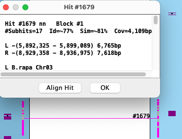
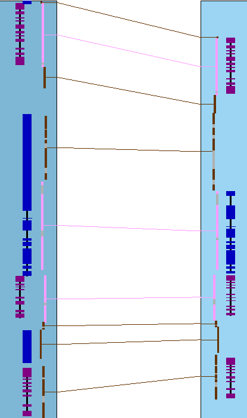

|
|
SyMAP Details |

|
|
|
|||
| Collinear sets | Highlight conserved genes | Hit popup |
Collinear sets
Using the
|
In the image on the right, two different sets are shown (green highlighted hits is the 1st set,
pink is the 2nd). They were broken up by a gene on each chromosome
that do not have a hit.
A collinear set either has all genes to the same strand (+/+, -/-) or different (+/-, -/+) In the image on the right, all genes in both sets are on the same strand. In the image below, all genes are on opposite strands.
The collinear set algorithm does not consider the amount of overlap of the hit to a gene, or the similarity of the hit sequences. |

|

The following are examples of interpreting the 2D view:
| Sometimes a hit looks like it overlaps a gene, but the gene is actually in the gap, so it is not hit. This is illustrated on the right, where the gene at the bottom appears hit by the pink hit-wire, but in fact are spanned by the gap gray area. Note that the hit popup shows it is a nn type, which hits no genes. |  | ||||||||||||||||||
|
The image on the right shows one collinear set with 6 brown hit-wires that are not part of the set. The following
explains them, using the symbols g0 (hits 0 genes), g1 (hits 1 gene), g2 (hits paired genes, at
least one on each chromosome).
As shown earlier, sometimes two genes look as one, so the |  |

{kind=link}
{kind=link}
Highlight conserved genes | Go to top |

As stated in Sequence Filters,
when there are more than 2 tracks displayed in
{kind=link}
The above image has the settings
Caveats:
- For a 3-chromosome view, say it shows genes A-B-C are conserved. The algorithm only checks the A-B hit and B-C hits exist, but does not the possible A-C hit.
- There may be different numbers of highlighted genes on the different tracks or hit-wires between tracks. This is because multiple hits can align to a gene, and one gene can align to two different genes on the opposing genome.
- When there are overlapping genes, a hit is assigned to just one of them, which causes some conserved genes to have incorrect pairing.
- There are occasional tiny hits that just barely overlap genes; the current algorithm marks them as conserved genes.
- Currently, the hits may align strictly in introns (especially for the long introns of mammalian genomes); the current algorithm marks these as conserved.
Hit popup | Go to top |
- Both lists are sorted by start coordinate.
- The # column in the two tables align to each, e.g. the rows #2 align to each other.
- The sequence name that is alphabetically lower (e.g. arab<cabb) is the query and the other is the target. The query is numbered 1-N; the target is ordered to match the query.
- Two subhits may overlap (Gap<=0) on one chromosome but not the other.
Merge

| In the merge view, hits with gap<=0 are merged with the hit they overlap with.
The numbered hits are no longer 1-to-1, i.e. they do not necessarily align to each other like they do in the un-merged view. The merge view corresponds better to the visual view on the 2D track. The existence of the |
Order

|
As stated above, each numbered hit corresponds to the same number in the opposite list,
e.g. the two #1 aligns. An '#' on the far right implies that the order numbers are not sequential.
This option produces another popup where the target list is sorted by '#', but then the coordinates are no longer sorted. The existence of the |